Sail Rock
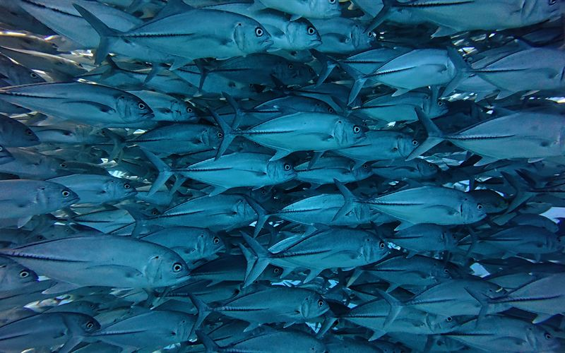
Großaugen-Stachelmakrele (Caranx sexfasciatus)
Die „Jacks“ von Sail Rock. Hunderte stehen zusammen im Blau vor den Wänden und wirbeln manchmal zu einem Tornado um die Taucher.
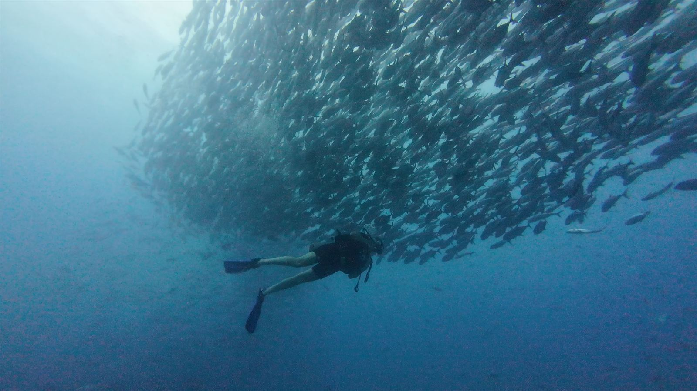
Start / Tauchplätze / Meeresleben
Was du beim Tauchen an Sail Rock und Koh Ma treffen kannst, von Schwärmen aus Hunderten Stachelmakrelen bis zu Nacktschnecken, die kleiner sind als dein Daumen. Jedes Foto auf dieser Seite ist bei unseren eigenen Tauchgängen entstanden.
Im Blau
Sail Rock steht allein im offenen Wasser, deshalb sammeln sich die Fische des offenen Meeres in einer Zahl um ihn, die man anderswo selten sieht.

Die „Jacks“ von Sail Rock. Hunderte stehen zusammen im Blau vor den Wänden und wirbeln manchmal zu einem Tornado um die Taucher.

Silbern und torpedoförmig, meist in großen, langsamen Schwärmen direkt neben dem Felsen. Sie sehen gefährlich aus, ignorieren Taucher aber völlig.
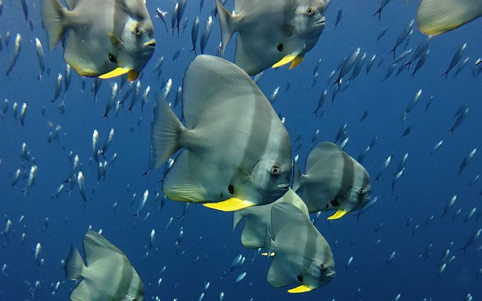
Hoch, flach und neugierig. Oft kommen sie nah heran, um sich die Taucher anzusehen, besonders während du am Sicherheitsstopp hängst.
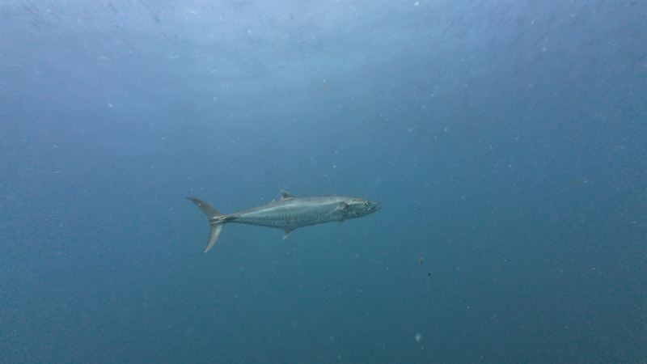
Ein schneller Jäger des offenen Wassers, der mit hohem Tempo durch die Schwärme schießt. Meist siehst du eine vorbeiziehen, nicht bleiben.
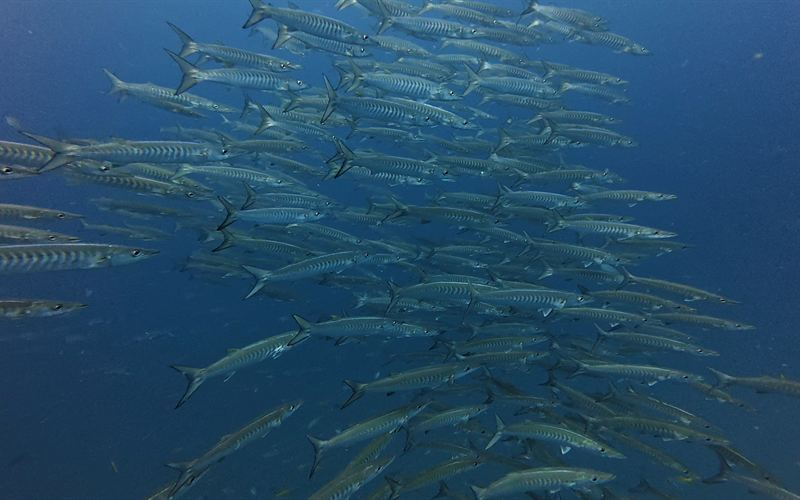
Achte auf die dunklen Winkelzeichen an den Seiten: Daran unterscheidest du sie vom Gebänderten Barrakuda. Sie bilden dichte Schwärme, die sich langsam im Blau drehen.
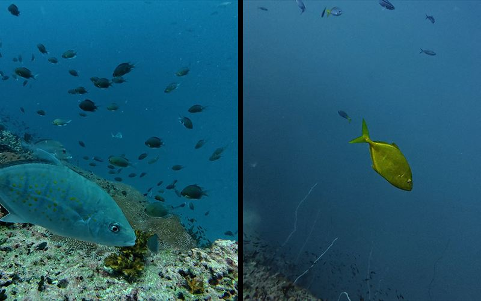
Eine große, silberblaue Stachelmakrele mit kleinen goldenen Punkten. Derselbe Fisch kann sich ganz leuchtend gelb färben, wie der rechts, also wundere dich nicht, wenn du beide siehst.
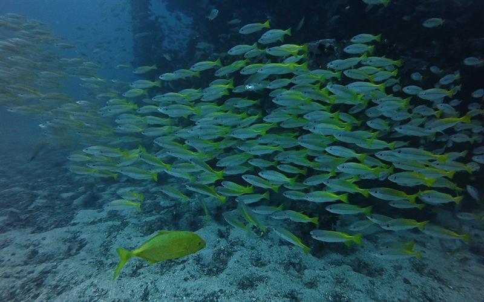
Silbern mit gelbem Streifen und großen Augen, in dichten Schwärmen nah am Riff. Viele Taucher halten sie für Füsiliere.
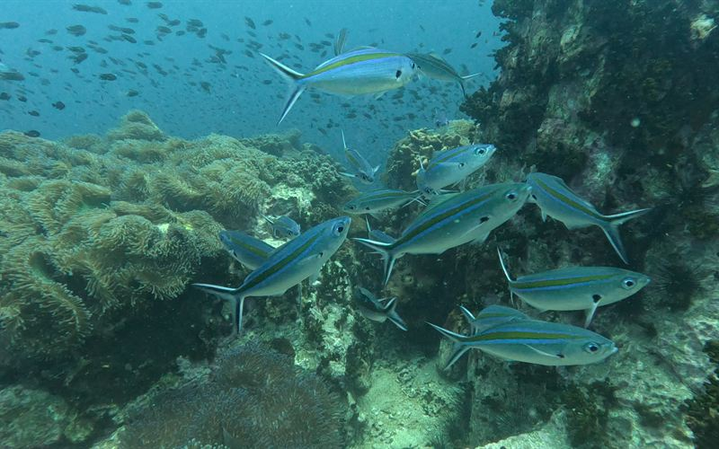
Stromlinienförmige blaue Fische mit goldenem Streifen und tief gegabelter Schwanzflosse, die in lockeren Schwärmen am Riff entlangziehen.
Am Riff
Schau genau auf die Wände, die Korallen und jeden Spalt: Im kleinen Leben steckt die meiste Farbe.
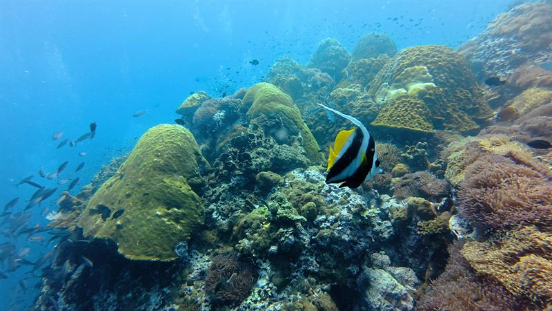
Schwarz-weiße Streifen mit einer langen weißen Flosse, die hinterherweht, oft paarweise über den Korallen.
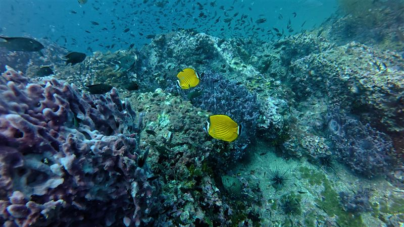
Leuchtend gelb mit einem schwarzen Band durchs Auge. Meist paarweise, zupft nah am Felsen an den Korallen.
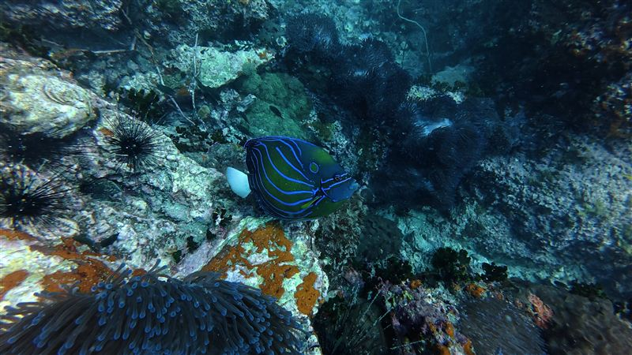
Braun-oranger Körper mit geschwungenen, elektrisch blauen Linien und einem blauen Ring hinter dem Kiemendeckel. Scheu: Er bleibt nah am Felsen und verschwindet in den Spalten.
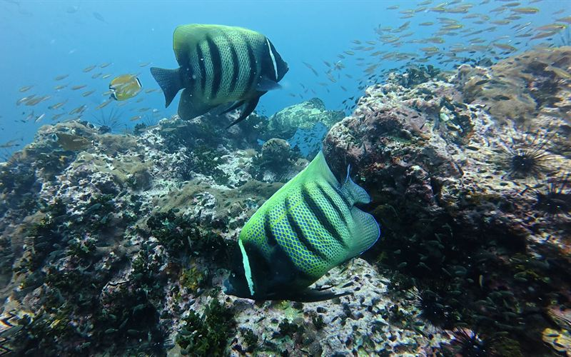
Ein großer Kaiserfisch mit sechs dunklen Streifen und blau gepunktetem Schwanz, oft paarweise über dem Riff unterwegs.
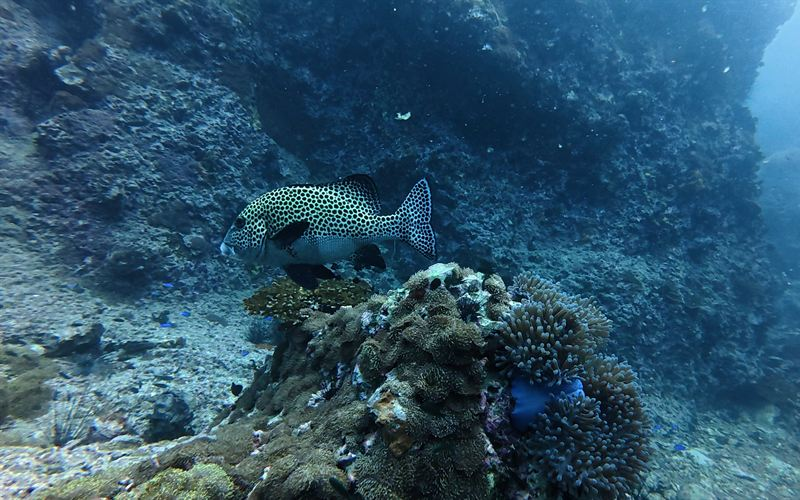
Erwachsene sind hell mit dunklen Punkten und dicken, gummiartigen Lippen und ruhen tagsüber unter Überhängen. Die Jungen sehen ganz anders aus: braun mit weißen Flecken, mit einem wackelnden Tanz beim Schwimmen.
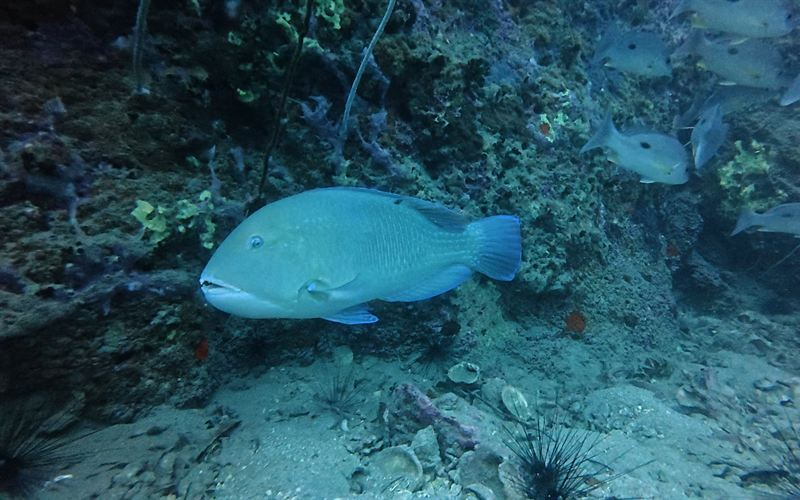
Ein großer blaugrüner Lippfisch mit vorstehenden Zähnen, mit denen er Muscheln knackt. Achte auf den kleinen schwarzen Fleck am Ansatz der Rückenflosse.
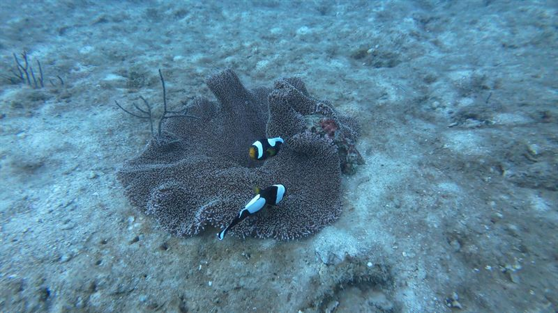
Leben in ihrer Anemone und verteidigen sie heftig — sogar gegen Taucher, die hundertmal größer sind.
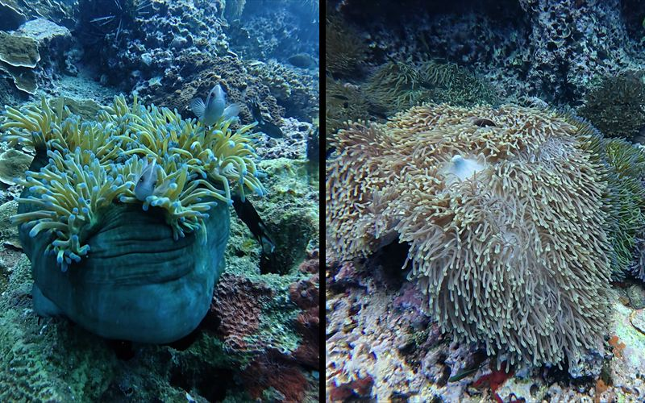
Das Zuhause der Anemonenfische. Wenn sie sich schließt, siehst du ihre farbige Säule, wie links; offen breitet sie einen Teppich aus Tentakeln über den Felsen, wie rechts.
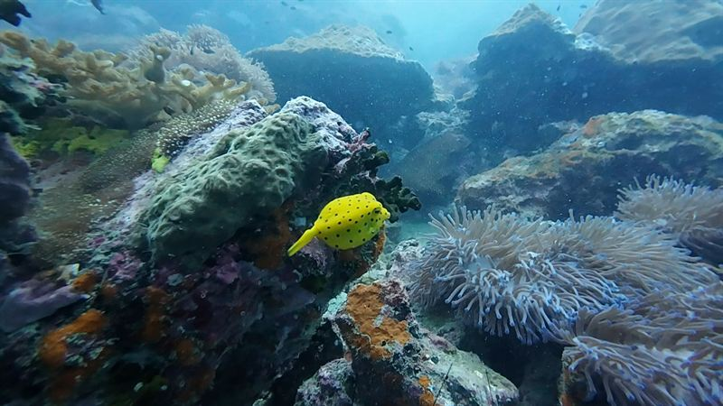
Die Jungen sind leuchtend gelb mit schwarzen Punkten und schwimmen wie winzige Würfel. Erwachsene werden mit dem Alter blasser.
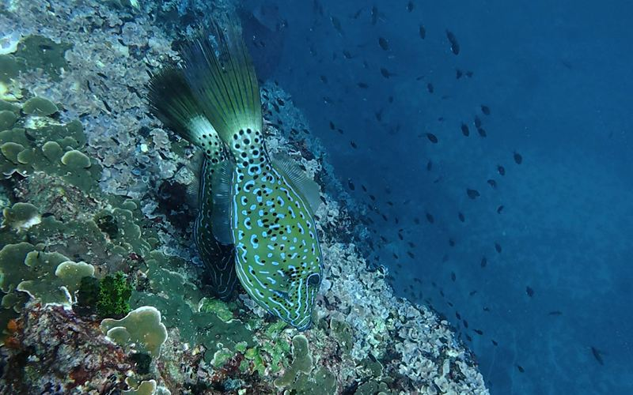
Bedeckt mit blauen Kritzeln und Punkten, mit rauer, feilenartiger Haut. Er steht an der Wand und dreht sich, um dich weiter zu beobachten.
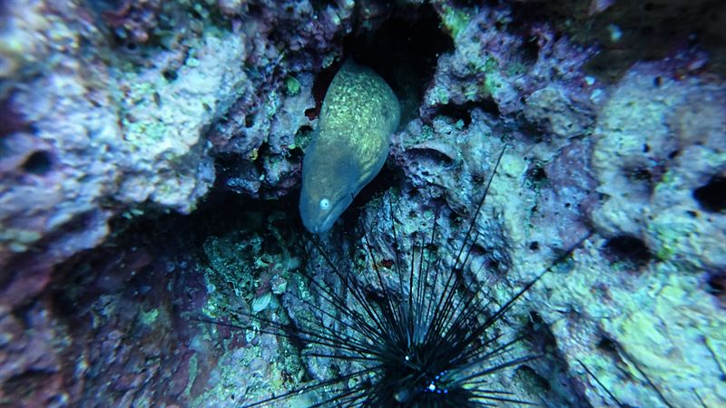
Köpfe, die aus dem Fels schauen und zum Atmen das Maul öffnen und schließen. Keine Gefahr — solange deine Hände nicht in Löcher greifen.
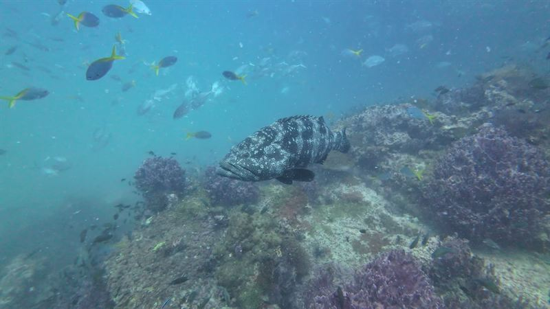
Ein großer, massiger Zackenbarsch, der langsam am Riff patrouilliert und Taucher oft recht nah heranlässt.
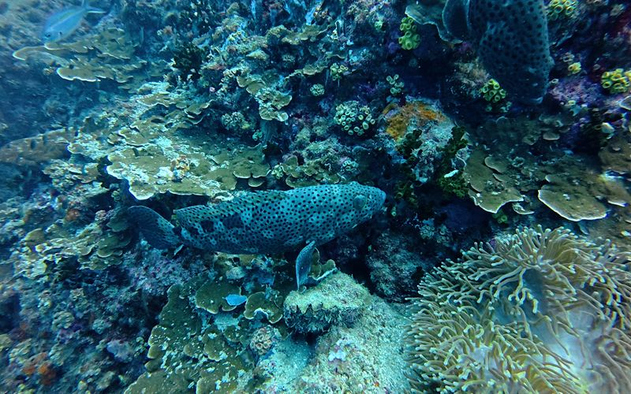
Einer der größten Zackenbarsche, bedeckt mit dunklen, kartoffelförmigen Flecken. Er kann neugierig sein und recht nah an Taucher herankommen.
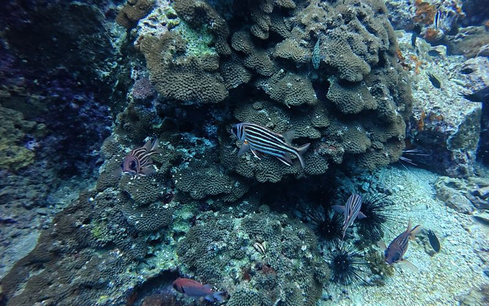
Rot-weiße Streifen und große Augen, wie gemacht für die Nacht. Tagsüber bleiben sie im Schatten von Überhängen und Spalten.
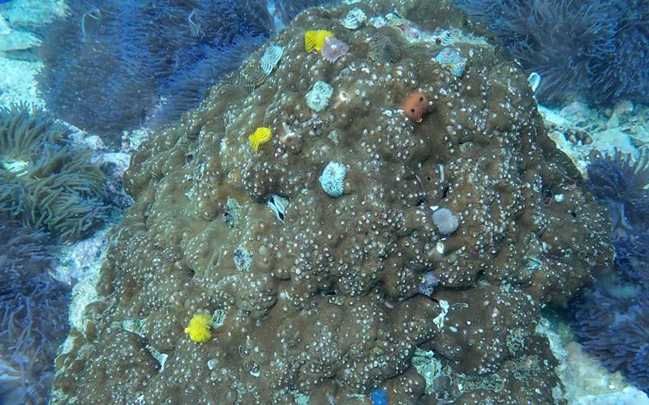
Winzige bunte Spiralen auf der Koralle, die in ihren Röhren verschwinden, sobald du näher kommst.
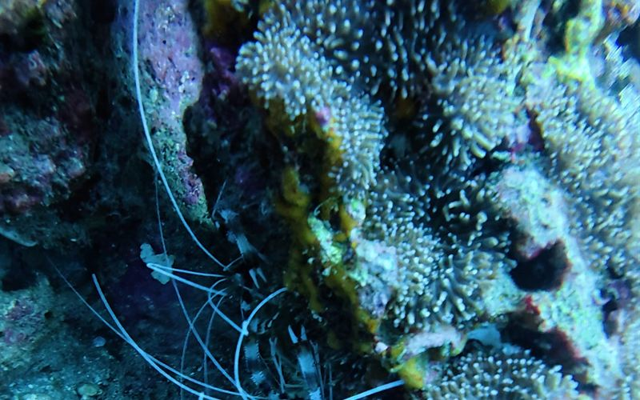
Rot-weiß gestreift mit langen weißen Antennen, oft kopfüber unter einem Überhang, wo sie darauf wartet, Fische zu putzen.
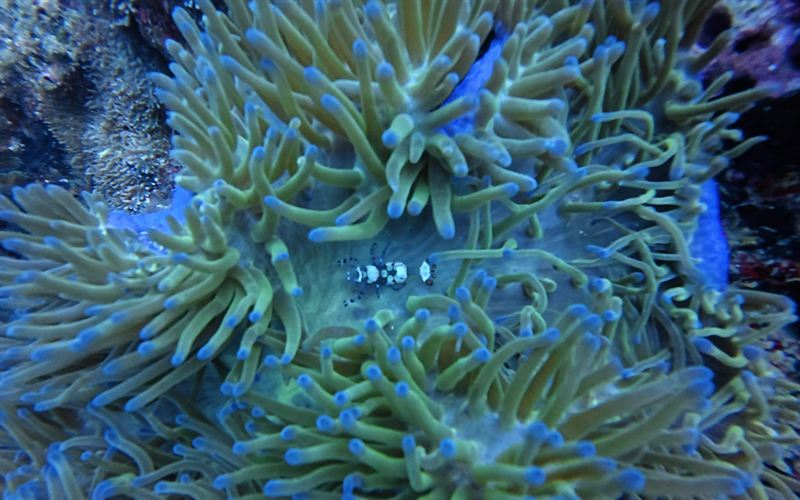
Eine winzige, fast durchsichtige Garnele mit weißen Punkten, die zwischen den Tentakeln einer Anemone lebt. Schau genau hin: Sie ist kleiner als dein Fingernagel.
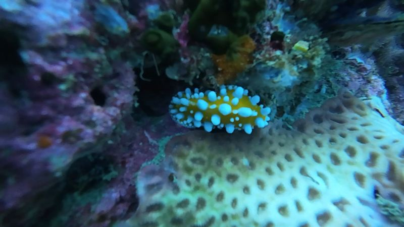
Nacktschnecken sind Meeresschnecken in unmöglichen Farben: klein und langsam, die Belohnung für Taucher mit guter Tarierung und Geduld. Diese gelbe mit hellblauen Höckern ist eine der am leichtesten zu findenden.
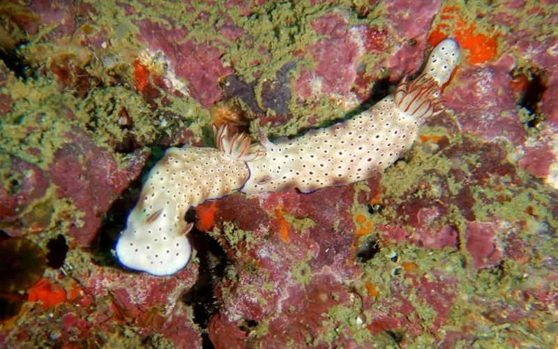
Cremefarben mit dunklen Punkten und violettem Rand. Sie sind oft paarweise unterwegs, eine folgt der Spur der anderen.
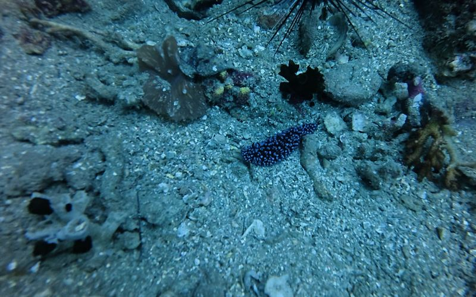
Schwarz mit rosa Höckern in Gruppen. Sie bewegt sich langsam über Fels und Geröll, ist also leicht zu fotografieren, wenn du sie einmal entdeckt hast.
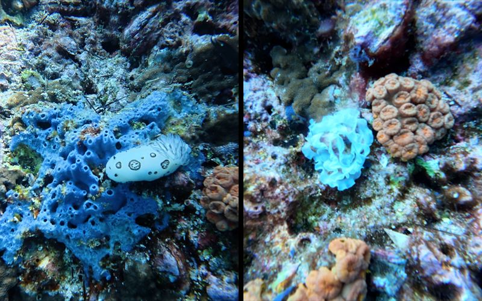
Weiß mit schwarzen Ringen, und rechts ihre Eier, als spiralförmiges Band abgelegt. Sie frisst blaue Schwämme, also such sie dort.
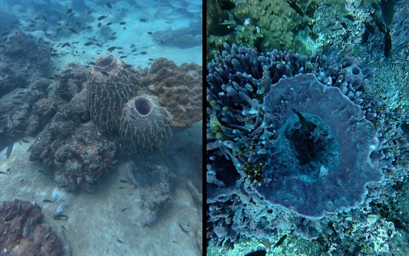
Riesige Schwämme in Vasenform: links von der Seite, rechts von oben mit Blick in die Öffnung. Sie filtern jeden Tag enorme Mengen Wasser und bieten oft ein oder zwei Fischen Unterschlupf.
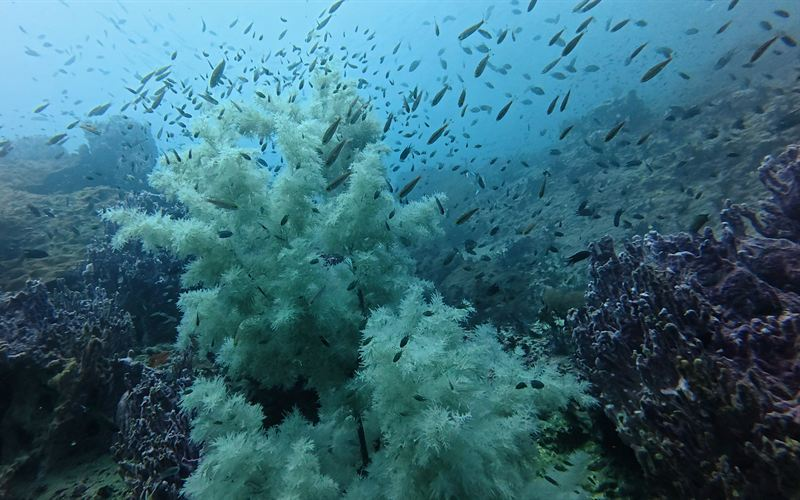
Eine Weichkoralle, die wie ein kleiner Baum wächst und sich ganz öffnet, wenn die Strömung ihr Nahrung bringt. Kleine Fische schweben gern um sie herum.
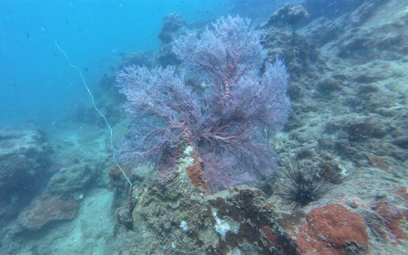
Eine Hornkoralle, die sich wie ein Fächer quer zur Strömung ausbreitet, um Plankton zu fangen. Schau sie dir an, aber halt deine Flossen fern: Sie bricht leicht.
Auf dem Sand
Die Sandflächen wirken leer, bis sich etwas bewegt. Werde langsamer und lass deine Augen sich einstellen.
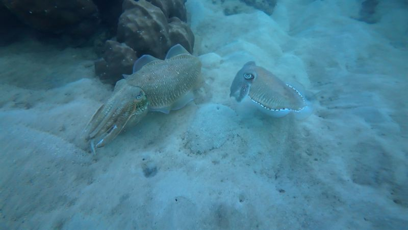
Meister des Farbwechsels, die über dem Sand schweben und ihre Haut verändern, während du zusiehst. Oft paarweise zu sehen.
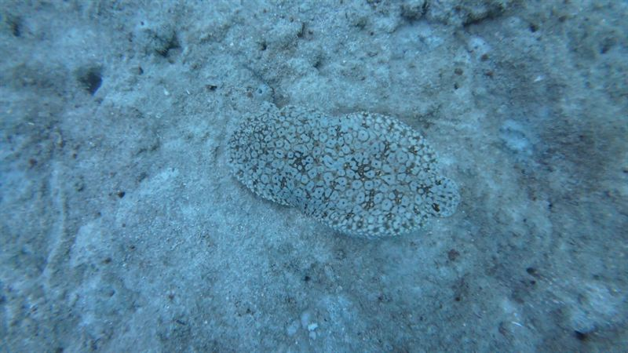
Ein Plattfisch mit beiden Augen auf einer Kopfseite, auf dem Sand fast unsichtbar, bis er sich bewegt.
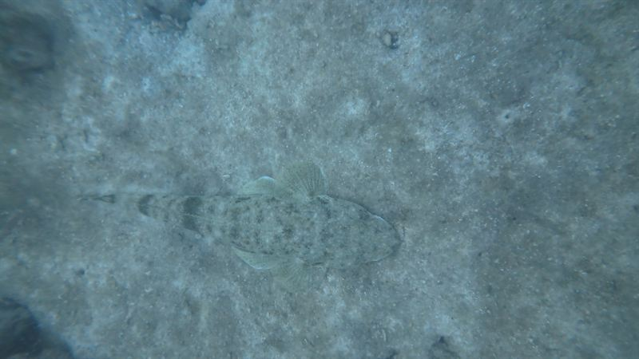
Lang, flach und getarnt, wartet er darauf, dass kleine Fische zu nah kommen. Achte auf die Augen.
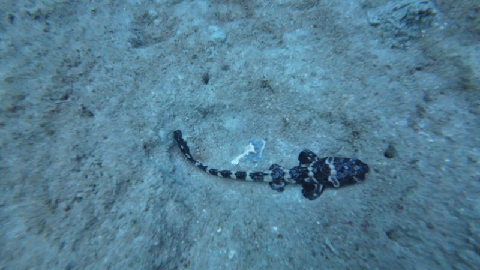
Auf Englisch auch Leopard Shark genannt: Die Jungen, wie dieser hier, sind gestreift, die Erwachsenen gefleckt. Ruhig und harmlos, meist liegt er auf dem Grund.
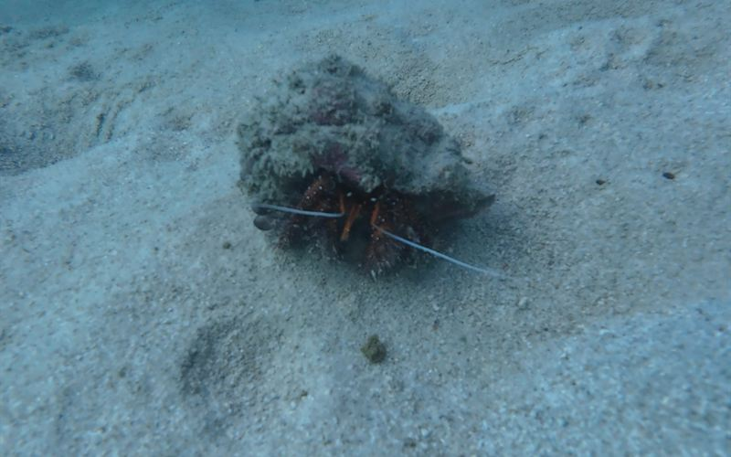
Trägt ein geliehenes Schneckenhaus auf dem Rücken und zieht um, wenn er wächst.
Große Besucher und Gefahren
Der eine, den alle sehen wollen, und die zwei, die jeder erkennen sollte, bevor er eine Hand absetzt.

Der größte Fisch im Meer besucht Sail Rock, um Plankton zu fressen, am häufigsten von April bis Juni.

Perfekt getarnt, mit giftigen Stacheln. Setz nie eine Hand oder ein Knie ab, ohne hinzusehen.
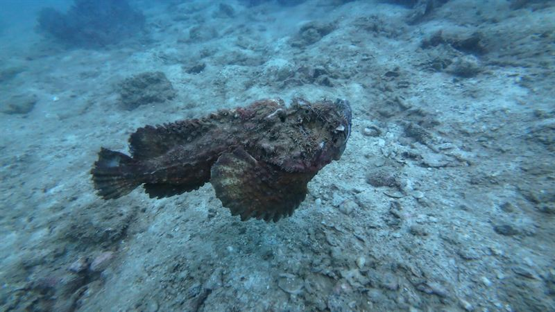
Sieht genau wie ein knubbeliger Stein aus und hat die giftigsten Stacheln aller Fische. Achte darauf, wo du Hände und Knie hinsetzt.
Fragen
Vor allem große Schwärme: Großaugen-Stachelmakrelen, Barrakudas und Fledermausfische rund um die Felsspitze, dazu Jäger wie die Königsmakrele, die durchziehen. An den Wänden gibt es Muränen, Feilenfische, Spiralröhrenwürmer und Nacktschnecken und ab und zu einen Walhai.
Einen flachen Hartkorallengarten mit Grünen Meeresschildkröten, Anemonenfischen in ihren Anemonen, Kofferfischen und Wimpelfischen sowie Sepien und Seezungen auf dem Sand rund ums Riff.
Ja, aber kein Grund zur Sorge. Taucher begegnen Walhaien, die Plankton fressen, und Zebrahaien, die ruhig auf dem Sand liegen. Beide sind für Menschen harmlos.
Sehr wenig, solange du nichts anfasst. Drachenköpfe und Steinfische haben giftige Stacheln, Seeigel und Feuerkorallen nesseln, und Würfelquallen können nahe der Oberfläche auftauchen. Unsere Seite zu Gesundheit und Sicherheit erklärt, was zu tun ist.
Miete eine Unterwasserkamera für 600฿, oder dein Instructor filmt deinen Tauchgang für 800฿, und wir zeigen dir gern die kleinen Dinge für deine Kamera — aber bitte nichts anfassen und kein Blitz auf die Tiere.
Sag uns, was du am liebsten sehen möchtest, und wir sagen dir, welcher Tauchplatz und welche Jahreszeit dir die besten Chancen geben.
Siehe auch den Sail-Rock-Tauchguide und alle unsere Tauchplätze.